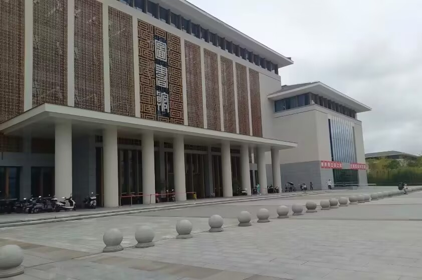
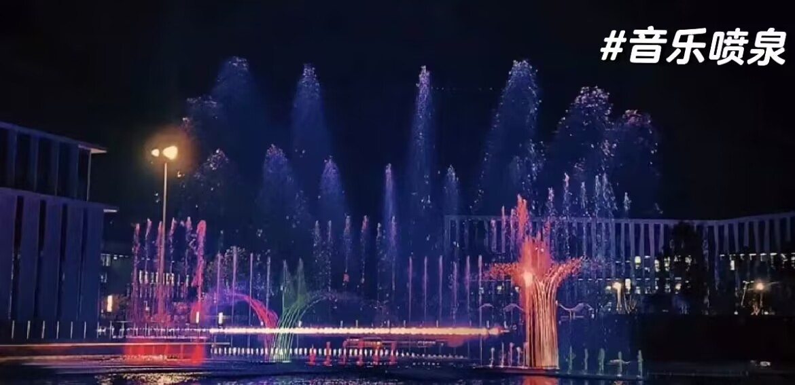

图书馆
四川轻化工大学图书馆始建于1965年，其前身为上海华东化工学院（现华东理工大学）四川分院图书馆，1978年随学校更名为四川化工学院图书馆，1983年更名为四川轻化工学院图书馆。
游泳馆
国际标准的大泳池连续游100米以及双踩水30秒可得深水证。国际标准的大泳池连续游100米以及双踩水30秒可得深水证。国际标准的大泳池连续游100米以及双踩水30秒可得深水证。
盐都大剧院
盐都音乐厅由同济大学设计、中国五冶集团承建，座位数551座，专门进行了声学深化设计以保障高水平音乐会的现场效果。随着音乐厅、剧场等场地的建成，以及施坦威专业演奏钢琴等设备到位，极大鼓舞了音乐学院师生。

音乐喷泉
音乐喷泉将高科技应用于它的音乐喷泉系统之中，创新性地将水幕电影、水幕投影、夜间水上芭蕾等表演形式融入其中，创造出了一个全新的音乐灯光水景秀。
醇泉湖
湖水在枯草丛里微微低语，远处不时传来一两只小鸭的扑翅声，使月夜的湖面更显得孤寂和冷清。